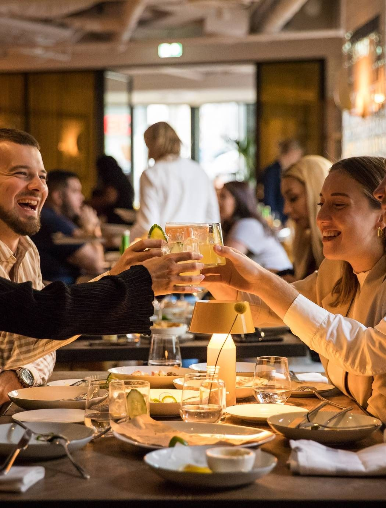

Un cadre raffiné pour une expérience sensorielle inoubliable.


Teranga Food est une ambassade du goût dédiée à la culture sénégalaise.
En collaboration directe avec nos agriculteurs locaux.
Des recettes transmises de génération en génération.